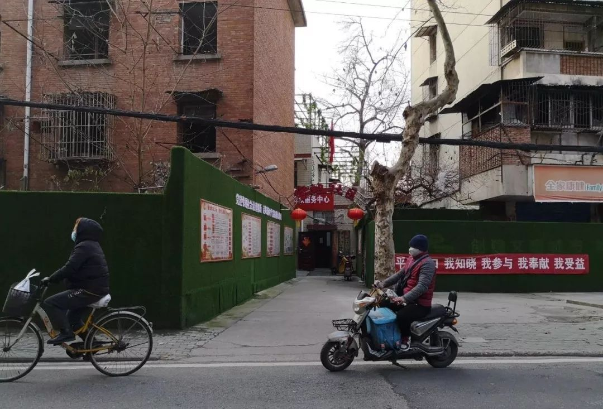

“有强烈无力感，在为定点医院床位不够买单” ——武汉社区医院主任自述
原文链接 备份链接 *************▲************* 1月30日，医护人员在工作间隙为自己鼓劲打气。 （新华社 陈晨/图） 全文共*3942*字，阅读大约需要9分钟。 据我所知，有的社区医院医生已经被打了，这让我 …


社区是预防和分诊的第一道防线。如今，在前所未有的疫情冲击之下，在巨大的困难面前，社区和社区工作者们被潮水般的求助人群不断冲击，已到了难堪其负的境地。



△ 武汉街头，吴靖摄
1月23日武汉封城后，武汉某社区居委会书记张平（化名）和同事们，每天都要接到许多社区居民的电话，有要求派车送病人去医院的，有要求社区人员陪同去医院的，还有要求他们去家中抬走遗体的……
工作内容的改变令张平负责的社区服务中心猝不及防。1月23日封城前，张平和同事们的工作不算复杂，他们响应政府“不信谣、不传谣”的号召，向所在社区的居民宣传“疫情没有那么严重”。一月上中旬，居民们依旧像以前一样，在没有消毒措施的菜市场里买菜、闲谈，街上没多少人戴口罩。一些感觉有些发热症状的人，习惯性地自己买药或排队去大医院看门诊。岁月静好，现世安稳。
之后很久，张平和同事们才知道，就在他们的这个社区内，1月中旬时，就已经有两名医护人员确诊感染了新冠病毒。这两名医护人员就是该社区的住户。而在1月中旬期间，当地大医院的医生们开始感觉到的忙碌和恐慌，还没有传递到社区里来。
封城之后，上级指令陡变，要求社区工作人员向居民宣传新冠肺炎传播的严重性，要求居民勤洗手、戴口罩。居民的防护意识和恐慌心情一同增加，不断增长的还有新冠肺炎的确诊人数、疑似人数，以及得不到确诊、住不进医院的危重病人——此时，他们一窝蜂地都涌向了社区。
张平带领着社区13名工作人员，9名保安队员，开始24小时值班，面对这个中等社区的2000多户居民、5000多个人。面对从未有过的工作强度和工作内容，他们在每日的奋战之余，也难免感到疲惫、焦虑和不安。
在疫情防控中，社区是预防和分诊的第一道防线。如今，在前所未有的疫情冲击之下，在巨大的现实困难之前，社区和社区工作者们被潮水般的求助人群不断冲击，已到了难堪其负的境地。
全武汉的2000余个社区，第一道防线，亟需各方支援。
一场猝不及防的社区防疫战
封城前，武汉各大三甲医院的发热门诊已是人满为患。封城后，恐慌的市民更是把各大医院的发热门诊堵得水泄不通。政府开始让社区承担分流病人的第一道关口。
1月24日，武汉封城后第二天，政府将武汉全市2000多个社区书记的联系方式，在各个居民微信群中公布。
同时传达的，还有一份武汉市新冠肺炎防控指挥部的七号文件：
由全市各社区负责，全面排查所服务辖区发热病人（含已就医和未就医市民），并送社区卫生中心对病情进行筛选、分类。对于需要到发热门诊的病人，各区统一安排车辆送达指定发热门诊就诊；对于不需要到发热门诊就诊的病人，由各社区落实在家居家观察，社区负责做好市民居家观察服务工作。
已确定或高度疑似的新型冠状病毒感染的肺炎病人，由市卫健委负责，安排车辆送至指定治疗点治疗；疑似的发热病人，留在发热门诊留滞观察；发热情况较轻，还不能确定为疑似的病人，由各区负责接回指定地点隔离观察；确定不是新型冠状病毒感染的肺炎病人，由各区负责送回家中居家观察。
一夜之间，社区工作成为整个防疫工作中最重要的一环。
张平所在的社区，距离疫情的发源地华南海鲜市场直线距离不到5公里，人群聚集，流动性特别高，居民的新冠肺炎感染率很高。社区以老旧住宅小区为主。老旧小区的居民，很多都是一些国企下岗职工，失去单位的他们，就成了没有单位管理的“社会人”。这些小区大多也没有物业。有物业的小区，社区相对轻松一些，因为宣传、消毒、封闭管理等工作，小区物业可以承担一部分。而没有物业的小区，所有的工作，就落在了社区服务中心的头上。
比起街道办事处的其它十几个社区，张平所在的这个社区疫情比较严重。社区里有一个新建的小区，许多附近的医生在那里买房。一些医护人员被感染，已有两名确诊新冠肺炎，还有一些疑似病例。
张平的手机被迅速打爆，许多发热患者开始走到社区服务中心咨询治疗事宜。武汉封城的第一天，张平和同事们没有任何的防护措施。1月26日，街道办事处才给他们配备了一次性口罩。2000个口罩分两次配给，其中一部分要分给社区独居的困难户和买不到口罩的居民。
1月27日，社区分到了20件防护服，一些护目镜，还有少量的消毒水，要求社区人员每天给小区消毒。消毒水明显不够，只好是给条件比较差的小区喷洒多一点，环境稍微好一点的小区，一天喷洒一次，或隔天喷洒一次。
1月28日，政府公告要求社区工作人员陪同发热病人去社区卫生服务中心或医院看病。封城之后，私家车不允许上路，病人们都来到社区要求派车，而给社区配备的三辆出租车，司机都没有防护措施，只能用于被隔离居民的送餐、买菜等辅助性工作，并不能送发热病人。“司机自己也要保护自己，怎么送发热病人呢？”
街道要求社区工作人员每天要上门排查发热病人，张平决定以打电话的方式替代。“看到疫情越来越严重，传染风险很大。我们决定，绝对不敲开别人家的门，而是在小区内进行灭菌消毒工作。我们把如何居家隔离、如何注意卫生的宣传单放在家门口，但不接触居民。”张平说。
政府要求如果社区发现疑似病人，需要病人在家隔离。张平所在的社区，社区网格员、社区书记、卫生院工作人员，还有派出所民警，对在家隔离的住户进行实时跟踪，确保该住户不传染并扩散病毒。但这一切，都是用电话追踪的方式进行。当疑似病人需要去社区卫生院复查时，社区会让他们自行去复查，这就丧失了在家隔离的意义。遇到这种情况，社区能做的就是向上汇报，看上面怎么处理。
一场社区工作人员和居民的博弈
在24小时不断的居民求助电话中，有不少是投诉电话。投诉最多的内容，是社区拒绝派车送他们到发热门诊。
2003年的非典，张平经历过，“那时武汉主要是输入性病例，而且也没有封城和禁止交通工具，感觉那时要比现在轻松。”
居民交通不便，急需用车，他们的要求来源于政府的规定：对于需要到发热门诊的病人，各区统一安排车辆将其送达指定发热门诊就诊。政府还有规定，要社区服务人员陪同他们就诊。初衷是防止这些病人成为移动感染源。
张平所在的社区服务中心，往往要求居民自行去卫生院分诊、发热门诊和医院。一方面，有车辆不足的现实原因，一个社区才配备三辆出租车，确实极难安排；另一方面，社区工作人员自身防护不足，他们也担心自己被感染。
1月27日晚，社区里一位被确诊冠状肺炎的老人，因为医院没有床位一直在家，在高烧四天后去世。他的亲密接触者是老伴和女儿，都出现了发热的迹象。死者家属不断打电话给社区服务中心，要求派车送死者的老伴去医院。随后，社区派车把她送到了最近的社区卫生中心做筛查，社区卫生中心筛查之后，判断老人高度疑似，分流到了协和医院确诊。一直到当晚11点，老人才看完病，家属打电话来要求社区派车来医院接。社区派不出车来，家属便打电话到街道办投诉。街道办再打电话给社区服务中心，要求派车。等到社区服务中心派出一辆电瓶车时，那位老人和家属们等待无望，已经走回家了。
第二天中午，老人要到医院复查，家属再次要求社区派车。社区不派车，家属直接带老太太去社区服务中心坐着。所有的工作人员都吓跑了。
最后，是老人家属自己找电瓶车把她送到了医院。
医院最终诊断老太太高度疑似新冠病毒肺炎，应该收治入院，但因为没有床位，难以入院。老太太的家属又找到社区，要求社区找到可以收治病人的定点医院，但社区并无能力要求已经爆满的医院接收病人。
于是，又一轮的争吵、投诉、博弈，在社区和居民之间开展。
类似这样的博弈，并没有赢家。
稍微松了口气
随着疫情的发展，武汉各大定点医院的状况已经很脆弱。物资紧缺、床位爆满、医护人员人手有限，使一些本该入院治疗的重症病人，只能在家。
某家定点医院的隔离病房并未住满，但工作群却发送出了让医护人员不再接收病人的信息。因为资源紧缺，医院也要保护自己的医护人员不受感染。
这些在家等候、毫无办法的重症病人，有些一家人都会有发热的症状，家属不断找社区解决问题，反倒成了社区最担心的感染源。
张平所在的社区，有一位82岁确诊新冠病毒肺炎的老人，住不进医院。他的女儿和妻子都发低烧，做了CT检测，高度疑似新冠肺炎。1月25日晚上8点，老人的情况极其危急，只有呼出去的气息。家属不断打电话让社区派车，社区没有车。又打电话给120，120回应只有医院同意接收，才可以派车。再打电话给卫健委和疾控部门，无人接听。当晚10点，老人不幸去世。悲痛的家属打电话给殡仪馆。殡仪馆表示，因新冠肺炎去世的人，必须要先进行消杀之后，殡仪馆才能派人过来。
家属把死者的物件堆在门口和楼道里，社区人员担心被感染，把情况上报给街道，要街道来对死者的物品进行消毒。街道人手不足，请人也请不到。后来，街道办事处副主任和社区卫生院的医生，自己穿着防护服对死者的物品进行了消杀。
消杀之后，1月26日上午，殡仪馆还没派人前来。于是，上级政府开始协调这件事情。之后，殡仪馆同意了出车，但要求派两个人帮忙抬尸体。最后，还是上级部门的一位领导干部，自己穿着防护服去抬走了尸体。
尽管极其注意自我防护，但张平社区的工作人员已有几个病倒。小区的管理措施日趋严格，每个小区只设一个门进出，进出的人员要被询问，测体温。各方人马都已经疲惫到了极点。
一些难以被收治入院的疑似病人，做不到居家隔离的要求，天天跑到社区，问社区工作人员何时才能安排住院。
1月30日，市政府开始给每个社区配备两位民警，协助他们完成上门探访、消毒等措施。区里也在酒店设置了强制医学隔离点，有医生和护士给疑似病人进行检测和简单的治疗。
这时，张平和同事们才稍微松了一口气。
吴靖 王晨|撰稿
吴晔婷对本文亦有贡献


我们尊重原创版权，未经允许请勿转载。
授权转载
郑琪 微信号: 1281949389
商务合作
上海：leslee 13916263824
北京：Jessie 13911125922
线索爆料、意见反馈，加入核心读者社群
请扫码联系健闻君

让朋友们看到你也在看
↓↓↓
原文链接 备份链接 *************▲************* 1月30日，医护人员在工作间隙为自己鼓劲打气。 （新华社 陈晨/图） 全文共*3942*字，阅读大约需要9分钟。 据我所知，有的社区医院医生已经被打了，这让我 …
原文链接 备份链接 封城时间终于进入了两位数，医疗资源紧张的情况依然不见显著改善。 昨天「财经」发的稿子内容触目惊心，以武汉的一家定点医院为例，120个发热病人，大约平均会有80人被诊断为肺部感染，其中又只有5人能够「幸运」的被收治住院， …
原文链接 备份链接 编者按： 8天时间，一座可容纳1000张床位的医院正式落成。这就是参照2003年非典期间北京小汤山医院所建的火神山医院。明天，这所医院就将收治病人。 据悉，该医院主要救治确诊患者，开设重症监护病区、重症病区、普通病区， …
原文链接 备份链接 有多少疑似？ 326份CT检查报告单，除了60份不发热的其他病例，剩下的266份CT报告，136例显示“肺部感染，呈多发磨玻璃样高密度影”。1月22日，湖北省新华医院放射科医生李云华手颤抖着数完，沉默了许久。这些前一 …
原文链接 备份链接 ************************** *************▲************* 一家定点医院输液室里，坐满了输液的病人。（李福荣/图） 全文共*2678*字，阅读大约需要7分钟。 “住院 …